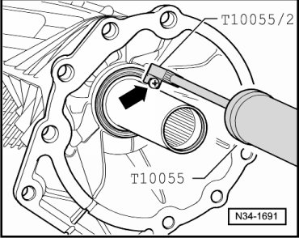
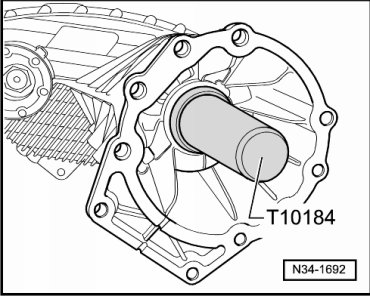

Input Shaft Seal
Input Shaft Seal
Special tools, testers and auxiliary items required
• Puller (T10055)
• Adapter (T10055/2)
• Thrust piece (T10184)
• Sealing grease (G 052 128 A1)
• Sheet metal screw approximately 4 mm diameter
Removing
- Remove transfer case. Refer to --> [ Transfer Case ] Transfer Case.
- To pull out seal, insert a sheet metal screw of approximately 4 mm diameter into the seal - arrow -.

Insert sheet metal screw in so that it jams between sealing lip and metal ledge of seal.
Do not bolt on metal bolt too deep to avoid damage to bearing lying behind.
- Pull out seal using puller (T10055).
Installing
- Fill area between sealing lip and dust lip halfway with sealing grease (G 052 128 A1).
- Drive new seal in as far as the stop; be sure not to distort seal.

- Install transfer case. Refer to --> [ Transfer Case ] Transfer Case.
- Check gear oil level in transfer case. Refer to --> [ Transfer Case Gear Oil Level, Checking ] Service and Repair.